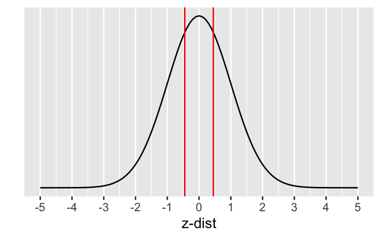

# run these every time you open Rstudio
library(tidyverse)
library(oibiostat)
library(janitor)
library(rstatix)
library(knitr)
library(gtsummary)
library(moderndive)
library(gt)
library(broom)
library(here)
library(pwr) # new-ishDRAFT: Day 12: Inference for a single proportion or difference of two (independent) proportions (Sections 8.1-8.2)
BSTA 511/611
Week 7
Load packages
- Packages need to be loaded every time you restart R or render an Qmd file
- You can check whether a package has been loaded or not
- by looking at the Packages tab and
- seeing whether it has been checked off or not
Where are we?
CI’s and hypothesis tests for different scenarios:
\[\text{point estimate} \pm z^*(or~t^*)\cdot SE,~~\text{test stat} = \frac{\text{point estimate}-\text{null value}}{SE}\]
| Day | Book | Population parameter |
Symbol | Point estimate | Symbol | SE |
|---|---|---|---|---|---|---|
| 10 | 5.1 | Pop mean | \(\mu\) | Sample mean | \(\bar{x}\) | \(\frac{s}{\sqrt{n}}\) |
| 10 | 5.2 | Pop mean of paired diff | \(\mu_d\) or \(\delta\) | Sample mean of paired diff | \(\bar{x}_{d}\) | \(\frac{s_d}{\sqrt{n}}\) |
| 11 | 5.3 | Diff in pop means |
\(\mu_1-\mu_2\) | Diff in sample means |
\(\bar{x}_1 - \bar{x}_2\) | \(\sqrt{\frac{s_1^2}{n_1} + \frac{s_2^2}{n_2}}\) or pooled |
| 12 | 8.1 | Pop proportion | \(p\) | Sample prop | \(\widehat{p}\) | ??? |
| 12 | 8.2 | Diff in pop proportions |
\(p_1-p_2\) | Diff in sample proportions |
\(\widehat{p}_1-\widehat{p}_2\) | ??? |
Goals for today (Sections 8.1-8.2)
- Statistical inference for a single proportion or the difference of two (independent) proportions
Sampling distribution for a proportion or difference in proportions
What are \(H_0\) and \(H_a\)?
What are the SE’s for \(\hat{p}\) and \(\hat{p}_1-\hat{p}_2\)?
Hypothesis test
Confidence Interval
How are the SE’s different for a hypothesis test & CI?
How to run proportions tests in R
Power & sample size for proportions tests (extra material)
Motivating example
One proportion
- A 2010 study found that out of 269 male college students, 35% had participated in sports betting in the previous year.
- What is the CI for the proportion?
- The study also reported that 36% of noncollege young males had participated in sports betting. Is the proportion for male college students different from 0.36?
Two proportions
- There were 214 men in the sample of noncollege young males (36% participated in sports betting in the previous year).
- Compare the difference in proportions between the college and noncollege young males.
- CI & Hypothesis test
Barnes GM, Welte JW, Hoffman JH, Tidwell MC. Comparisons of gambling and alcohol use among college students and noncollege young people in the United States. J Am Coll Health. 2010 Mar-Apr;58(5):443-52. doi: 10.1080/07448480903540499. PMID: 20304756; PMCID: PMC4104810.
Steps in a Hypothesis Test
Set the level of significance \(\alpha\)
Specify the null ( \(H_0\) ) and alternative ( \(H_A\) ) hypotheses
- In symbols
- In words
- Alternative: one- or two-sided?
Calculate the test statistic.
Calculate the p-value based on the observed test statistic and its sampling distribution
Write a conclusion to the hypothesis test
- Do we reject or fail to reject \(H_0\)?
- Write a conclusion in the context of the problem
Step 2: Null & Alternative Hypotheses
Null and alternative hypotheses in words and in symbols.
One sample test
\(H_0\): The population proportion of young male college students that participated in sports betting in the previous year is 0.36.
\(H_A\): The population proportion of young male college students that participated in sports betting in the previous year is not 0.36.
\[\begin{align} H_0:& p = 0.36\\ H_A:& p \neq 0.36\\ \end{align}\]
Two samples test
\(H_0\): The difference in population proportions of young male college and noncollege students that participated in sports betting in the previous year is 0.
\(H_A\): The difference in population proportions of young male college and noncollege students that participated in sports betting in the previous year is not 0.
\[\begin{align} H_0:& p_{coll} - p_{noncoll} = 0\\ H_A:& p_{coll} - p_{noncoll} \neq 0\\ \end{align}\]
One proportion inference
Sampling distribution of \(\hat{p}\)
- \(\hat{p}=\frac{X}{n}\) where \(X\) is the number of “successes” and \(n\) is the sample size.
- \(X \sim Bin(n,p)\), where \(p\) is the population proportion.
- For \(n\) “big enough”, the normal distribution can be used to approximate a binomial distribution:
\[Bin(n,p) \rightarrow N\Big(\mu = np, \sigma = \sqrt{np(1-p)} \Big)\]
- Since \(\hat{p}=\frac{X}{n}\) is a linear transformation of \(X\), we have for large n:
\[\hat{p} \sim N\Big(\mu_{\hat{p}} = p, \sigma_{\hat{p}} = \sqrt{\frac{p(1-p)}{n}} \Big)\]
- How we apply this result to CI’s and test statistics is different!!!
Step 3: Test statistic
Sampling distribution of \(\hat{p}\) if we assume \(H_0: p=p_0\) is true:
\[\hat{p} \sim N\Big(\mu_{\hat{p}} = p, \sigma_{\hat{p}} = \sqrt{\frac{p(1-p)}{n}} \Big) \sim N\Big( \mu_{\hat{p}}=p_0, \sigma_{\hat{p}}=\sqrt{\frac{p_0\cdot(1-p_0)}{n}} \Big)\]
Test statistic for a one sample proportion test:
\[ \text{test stat} = \frac{\text{point estimate}-\text{null value}}{SE} = z_{\hat{p}} = \frac{\hat{p} - p_0}{\sqrt{\frac{p_0\cdot(1-p_0)}{n}}} \]
Example: A 2010 study found that out of 269 male college students, 35% had participated in sports betting in the previous year.
What is the test statistic when testing \(H_0: p=0.36\) vs. \(H_A: p \neq 0.36\)?
p0 <- 0.36
n <- 269
n*.35[1] 94.15(ph <- 94/n)[1] 0.3494424(SEp <- sqrt(p0*(1-p0)/n))[1] 0.02926612(zp <- (ph-p0)/SEp)[1] -0.3607455\[\begin{align} z_{\hat{p}} &= \frac{94/269 - 0.36}{\sqrt{\frac{0.36\cdot(1-0.36)}{269}}} \\ & -0.3607455 \end{align}\]
Step “3b”: Conditions satisfied?
Conditions:
- Independent observations
- The observations were collected independently.
- The number of expected successes and expected failures is at least 10.
- \(n_1 p_0 \ge 10, \ \ n_1(1-p_0)\ge 10\)
Example: A 2010 study found that out of 269 male college students, 35% had participated in sports betting in the previous year.
Testing \(H_0: p=0.36\) vs. \(H_A: p \neq 0.36\).
Are the conditions satisfied?
Step 4: p-value
The p-value is the probability of obtaining a test statistic just as extreme or more extreme than the observed test statistic assuming the null hypothesis \(H_0\) is true.
Calculate the p-value:
\[\begin{align} 2 &\cdot P(\hat{p}<0.35) \\ &= 2 \cdot P\Big(Z_{\hat{p}} < \frac{94/269 - 0.36}{\sqrt{\frac{0.36\cdot(1-0.36)}{269}}}\Big)\\ &=2 \cdot P(Z_{\hat{p}} < -0.3607455)\\ &= 0.7182897 \end{align}\]
2*pnorm(-0.3607455)[1] 0.7182897Step 5: Conclusion to hypothesis test
\[\begin{align} H_0:& p = 0.36\\ H_A:& p \neq 0.36\\ \end{align}\]
- Recall the \(p\)-value = 0.7182897
- Use \(\alpha\) = 0.05.
- Do we reject or fail to reject \(H_0\)?
Conclusion statement:
- Stats class conclusion
- There is insufficient evidence that the (population) proportion of young male college students that participated in sports betting in the previous year is different than 0.36 ( \(p\)-value = 0.72).
- More realistic manuscript conclusion:
- In a sample of 269 male college students, 35% had participated in sports betting in the previous year, which is not different from 36% ( \(p\)-value = 0.72).
95% CI for population proportion
What to use for SE in CI formula?
\[\hat{p} \pm z^* \cdot SE_{\hat{p}}\]
Sampling distribution of \(\hat{p}\):
\[\hat{p} \sim N\Big(\mu_{\hat{p}} = p, \sigma_{\hat{p}} = \sqrt{\frac{p(1-p)}{n}} \Big)\]
Problem: We don’t know what \(p\) is - it’s what we’re estimating with the CI.
Solution: approximate \(p\) with \(\hat{p}\):
\[SE_{\hat{p}} = \sqrt{\frac{\hat{p}(1-\hat{p})}{n}}\]
Example: A 2010 study found that out of 269 male college students, 35% had participated in sports betting in the previous year.
Find the 95% CI for the population proportion.
\[\begin{align} 94/269 &\pm 1.96 \cdot SE_{\hat{p}}\\ SE_{\hat{p}} &= \sqrt{\frac{(94/269)(1-94/269)}{269}} \end{align}\]
Interpretation:
We are 95% confident that the (population) proportion of young male college students that participated in sports betting in the previous year is in (0.29, 0.41).
Conditions for one proportion: test vs. CI
Hypothesis test conditions
- Independent observations
- The observations were collected independently.
- The number of expected successes and expected failures is at least 10.
\[n_1 p_0 \ge 10, \ \ n_1(1-p_0)\ge 10\]
Confidence interval conditions
- Independent observations
- The observations were collected independently.
- The number of successes and failures is at least 10:
\[n_1\hat{p}_1 \ge 10, \ \ n_1(1-\hat{p}_1)\ge 10\]
Inference for difference of two independent proportions \(\hat{p}_1-\hat{p}_2\)
Sampling distribution of \(\hat{p}_1-\hat{p}_2\)
- \(\hat{p}_1=\frac{X_1}{n_1}\) and \(\hat{p}_2=\frac{X_2}{n_2}\),
- \(X_1\) & \(X_2\) are the number of “successes”
- \(n_1\) & \(n_2\) are the sample sizes of the 1st & 2nd samples
- Each \(\hat{p}\) can be approximated by a normal distribution, for “big enough” \(n\)
- Since the difference of independent normal random variables is also independent, it follows that for “big enough” \(n_1\) and \(n_2\)
\[\hat{p}_1 - \hat{p}_2 \sim N \Big(\mu_{\hat{p}_1 - \hat{p}_2} = p_1 - p_2, ~~ \sigma_{\hat{p}_1 - \hat{p}_2} = \sqrt{ \frac{p_1\cdot(1-p_1)}{n_1} + \frac{p_2\cdot(1-p_2)}{n_2}} \Big)\]
where \(p_1\) & \(p_2\) are the population proportions, respectively.
- How we apply this result to CI’s and test statistics is different!!!
Step 3: Test statistic (1/2)
Sampling distribution of \(\hat{p}_1 - \hat{p}_2\): \[\hat{p}_1 - \hat{p}_2 \sim N \Big(\mu_{\hat{p}_1 - \hat{p}_2} = p_1 - p_2, ~~ \sigma_{\hat{p}_1 - \hat{p}_2} = \sqrt{ \frac{p_1\cdot(1-p_1)}{n_1} + \frac{p_2\cdot(1-p_2)}{n_2}} \Big)\]
Since we assume \(H_0: p_1 - p_2 = 0\) is true, we “pool” the proportions of the two samples to calculate the SE:
\[\text{pooled proportion} = \hat{p}_{pool} = \dfrac{\text{total number of successes} }{ \text{total number of cases}} = \frac{x_1+x_2}{n_1+n_2}\]
Test statistic:
\[ \text{test statistic} = z_{\hat{p}_1 - \hat{p}_2} = \frac{\hat{p}_1 - \hat{p}_2 - 0}{\sqrt{\frac{\hat{p}_{pool}\cdot(1-\hat{p}_{pool})}{n_1} + \frac{\hat{p}_{pool}\cdot(1-\hat{p}_{pool})}{n_2}}} \]
Step 3: Test statistic (2/2)
\[ \text{test statistic} = z_{\hat{p}_1 - \hat{p}_2} = \frac{\hat{p}_1 - \hat{p}_2 - 0}{\sqrt{\frac{\hat{p}_{pool}\cdot(1-\hat{p}_{pool})}{n_1} + \frac{\hat{p}_{pool}\cdot(1-\hat{p}_{pool})}{n_2}}} \]
\[\text{pooled proportion} = \hat{p}_{pool} = \dfrac{\text{total number of successes} }{ \text{total number of cases}} = \frac{x_1+x_2}{n_1+n_2}\]
Example: A 2010 study found that out of 269 male college students, 35% had participated in sports betting in the previous year, and out of 214 noncollege young males 36% had.
What is the test statistic when testing \(H_0: p_{coll} - p_{noncoll} = 0\) vs. \(H_A: p_{coll} - p_{noncoll} \neq 0\)?
\[\begin{align} z_{\hat{p}_1 - \hat{p}_2} &= \frac{94/269 - 77/214-0}{\sqrt{0.354\cdot(1-0.354)(\frac{1}{269}+\frac{1}{214})}}\\ &=-0.2367497 \end{align}\]
Step “3b”: Conditions satisfied?
Conditions:
- Independent observations & samples
- The observations were collected independently.
- In particular, observations from the two groups weren’t paired in any meaningful way.
- The number of expected successes and expected failures is at least 10 for each group - using the pooled proportion:
- \(n_1\hat{p}_{pool} \ge 10, \ \ n_1(1-\hat{p}_{pool}) \ge 10\)
- \(n_2\hat{p}_{pool} \ge 10, \ \ n_2(1-\hat{p}_{pool}) \ge 10\)
Example: A 2010 study found that out of 269 male college students, 35% had participated in sports betting in the previous year, and out of 214 noncollege young males 36% had.
Testing \(H_0: p_{coll} - p_{noncoll} = 0\) vs. \(H_A: p_{coll} - p_{noncoll} \neq 0\)? .
Are the conditions satisfied?
Step 4: p-value
The p-value is the probability of obtaining a test statistic just as extreme or more extreme than the observed test statistic assuming the null hypothesis \(H_0\) is true.

Calculate the p-value:
\[\begin{align} 2 &\cdot P(\hat{p}_1 - \hat{p}_2<0.35-0.36) \\ &= 2 \cdot P\Big(Z_{\hat{p}_1 - \hat{p}_2} < \\ &\frac{94/269 - 77/214-0}{\sqrt{0.354\cdot(1-0.354)(\frac{1}{269}+\frac{1}{214})}}\Big)\\ &=2 \cdot P(Z_{\hat{p}} < -0.2367497) \end{align}\]
2*pnorm(-0.2367497)[1] 0.812851Step 5: Conclusion to hypothesis test
\[\begin{align} H_0:& p_{coll} - p_{noncoll} = 0\\ H_A:& p_{coll} - p_{noncoll} \neq 0\\ \end{align}\]
- Recall the \(p\)-value = 0.812851
- Use \(\alpha\) = 0.05.
- Do we reject or fail to reject \(H_0\)?
Conclusion statement:
- Stats class conclusion
- There is insufficient evidence that the difference in (population) proportions of young male college and noncollege students that participated in sports betting in the previous year are different ( \(p\)-value = 0.81).
- More realistic manuscript conclusion:
- 35% of young male college students (n=269) and 36% of noncollege young males (n=214) participated in sports betting in the previous year ( \(p\)-value = 0.81).
95% CI for population difference in proportions
What to use for SE in CI formula?
\[\hat{p}_1 - \hat{p}_2 \pm z^* \cdot SE_{\hat{p}_1 - \hat{p}_2}\]
SE in sampling distribution of \(\hat{p}_1 - \hat{p}_2\)
\[\sigma_{\hat{p}_1 - \hat{p}_2} = \sqrt{ \frac{p_1\cdot(1-p_1)}{n_1} + \frac{p_2\cdot(1-p_2)}{n_2}} \]
Problem: We don’t know what \(p\) is - it’s what we’re estimating with the CI.
Solution: approximate \(p_1\), \(p_2\) with \(\hat{p}_1\), \(\hat{p}_2\):
\[SE_{\hat{p}_1 - \hat{p}_2} = \sqrt{ \frac{\hat{p}_1\cdot(1-\hat{p}_1)}{n_1} + \frac{\hat{p}_2\cdot(1-\hat{p}_2)}{n_2}}\]
Example: A 2010 study found that out of 269 male college students, 35% had participated in sports betting in the previous year, and out of 214 noncollege young males 36% had. Find the 95% CI for the difference in population proportions.
\[\frac{94}{269} - \frac{77}{214} \pm 1.96 \cdot SE_{\hat{p}_1 - \hat{p}_2}\]
\[\begin{align} & SE_{\hat{p}_1 - \hat{p}_2}=\\ & \sqrt{ \frac{94/269 \cdot (1-94/269)}{269} + \frac{77/214 \cdot (1-77/214)}{214}} \end{align}\]
Interpretation:
We are 95% confident that the difference in (population) proportions of young male college and noncollege students that participated in sports betting in the previous year is in (-0.127, 0.106).
Conditions for difference in proportions: test vs. CI
Hypothesis test conditions
- Independent observations & samples
- The observations were collected independently.
- In particular, observations from the two groups weren’t paired in any meaningful way.
- The number of expected successes and expected failures is at least 10 for each group - using the pooled proportion:
- \(n_1\hat{p}_{pool} \ge 10, \ \ n_1(1-\hat{p}_{pool}) \ge 10\)
- \(n_2\hat{p}_{pool} \ge 10, \ \ n_2(1-\hat{p}_{pool}) \ge 10\)
Confidence interval conditions
- Independent observations & samples
- The observations were collected independently.
- In particular, observations from the two groups weren’t paired in any meaningful way.
- The number of successes and expected failures is at least 10 for each group.
- \(n_1\hat{p}_1 \ge 10, \ \ n_1(1-\hat{p}_1) \ge 10\)
- \(n_2\hat{p}_2 \ge 10, \ \ n_2(1-\hat{p}_2) \ge 10\)
1- and 2-sample proportions tests in R
prop.test- Need a dataset to use
prop.test- Create dataset based on the summary stats if do not have one
- Input of
prop.testis atable()of the dataset - Continuity correction
R: 1-sample proportion test (1/3)
Create a dataset based on the results:
.35*269 # number of "successes"[1] 94.15# round this value
SportsBet1 <- tibble(
Coll = c(rep("Bet", 94),
rep("NotBet",269-94))
)
glimpse(SportsBet1)Rows: 269
Columns: 1
$ Coll <chr> "Bet", "Bet", "Bet", "Bet", "Bet", "Bet", "Bet", "Bet", "Bet", "B…SportsBet1 %>% tabyl(Coll) Coll n percent
Bet 94 0.3494424
NotBet 175 0.6505576R code for proportions test requires input as a base R table:
table(SportsBet1$Coll)
Bet NotBet
94 175 R: 1-sample proportion test (2/3)
prop.test requires the input x to be a table
prop.test(x = table(SportsBet1$Coll),
alternative = "two.sided",
p = 0.36,
correct = FALSE)
1-sample proportions test without continuity correction
data: table(SportsBet1$Coll), null probability 0.36
X-squared = 0.13014, df = 1, p-value = 0.7183
alternative hypothesis: true p is not equal to 0.36
95 percent confidence interval:
0.2949476 0.4081767
sample estimates:
p
0.3494424 R: 1-sample proportion test: with vs. without CC (3/3)
Apply a continuity correction (CC) to the p-value calculation.
prop.test(x = table(SportsBet1$Coll), alternative = "two.sided",
p = 0.36, correct = FALSE) %>% tidy() %>% gt()| estimate | statistic | p.value | parameter | conf.low | conf.high | method | alternative |
|---|---|---|---|---|---|---|---|
| 0.3494424 | 0.1301373 | 0.7182897 | 1 | 0.2949476 | 0.4081767 | 1-sample proportions test without continuity correction | two.sided |
prop.test(x = table(SportsBet1$Coll), alternative = "two.sided",
p = 0.36, correct = TRUE) %>% tidy() %>% gt()| estimate | statistic | p.value | parameter | conf.low | conf.high | method | alternative |
|---|---|---|---|---|---|---|---|
| 0.3494424 | 0.08834805 | 0.7662879 | 1 | 0.2931841 | 0.4100774 | 1-sample proportions test with continuity correction | two.sided |
Differences are small when sample sizes are large.
R: 2-samples proportions test (1/3)
We first need a dataset based on the results:
.35*269 # number of "successes"[1] 94.15.36*214 # round these value[1] 77.04SportsBet2 <- tibble(
Group = c(rep("College", 269),
rep("NonCollege", 214)),
Bet = c(rep("yes", 94),
rep("no", 269-94),
rep("yes", 77),
rep("no", 214-77))
)
glimpse(SportsBet2)Rows: 483
Columns: 2
$ Group <chr> "College", "College", "College", "College", "College", "College"…
$ Bet <chr> "yes", "yes", "yes", "yes", "yes", "yes", "yes", "yes", "yes", "…SportsBet2 %>% tabyl(Group, Bet) Group no yes
College 175 94
NonCollege 137 77R code for proportions test requires input as a base R table:
table(SportsBet2$Group, SportsBet2$Bet)
no yes
College 175 94
NonCollege 137 77R: 2-samples proportions test (2/3)
prop.test requires the input x to be a table
prop.test(x = table(SportsBet2$Group, SportsBet2$Bet),
alternative = "two.sided",
correct = FALSE)
2-sample test for equality of proportions without continuity correction
data: table(SportsBet2$Group, SportsBet2$Bet)
X-squared = 0.05605, df = 1, p-value = 0.8129
alternative hypothesis: two.sided
95 percent confidence interval:
-0.07554399 0.09628540
sample estimates:
prop 1 prop 2
0.6505576 0.6401869 R: 2-samples proportions test: with vs. without CC (3/3)
Apply a continuity correction (CC) to the p-value calculation.
prop.test(x = table(SportsBet2$Group, SportsBet2$Bet), alternative = "two.sided",
correct = FALSE) %>% tidy() %>% gt()| estimate1 | estimate2 | statistic | p.value | parameter | conf.low | conf.high | method | alternative |
|---|---|---|---|---|---|---|---|---|
| 0.6505576 | 0.6401869 | 0.05605044 | 0.8128509 | 1 | -0.07554399 | 0.0962854 | 2-sample test for equality of proportions without continuity correction | two.sided |
prop.test(x = table(SportsBet2$Group, SportsBet2$Bet), alternative = "two.sided",
correct = TRUE) %>% tidy() %>% gt()| estimate1 | estimate2 | statistic | p.value | parameter | conf.low | conf.high | method | alternative |
|---|---|---|---|---|---|---|---|---|
| 0.6505576 | 0.6401869 | 0.01987511 | 0.8878864 | 1 | -0.07973918 | 0.1004806 | 2-sample test for equality of proportions with continuity correction | two.sided |
Differences are small when sample sizes are large.